desert_spider · pass 92 · 19 Oct 2026The Desert Spider
Your 3D spider, walked and killed the way the Dune Scorpion was: Blender moves the model, its depth renders guide the video model, and the paintings give it four looks from near-real to very cartoony. The model needed two more legs and a walk of its own on the way, and the death had to be built from scratch: it rolls onto its back and curls its legs up like a real dead spider. Every picture here is from the real run.
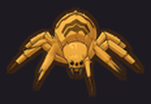
SP-A · Near-realA desert wolf spider: tan fur, a chevron on its back, banded legs, eight small eyes, no face. SP-B · Mild cartoonA rust tarantula with a cream stripe, big shiny eyes and a grumpy frown.
SP-B · Mild cartoonA rust tarantula with a cream stripe, big shiny eyes and a grumpy frown.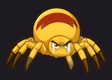
SP-C · ExaggeratedA balloon of an abdomen with a red mark, chunky legs, angry eyes under heavy brows.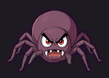
SP-D · Very exaggeratedA purple ball of anger: huge furious eyes, a snarl of fangs, little stick legs.legs on your model: the middle pair copied in Blender before anything was painted.
SP-A to SP-D on one 3D spider, each a full strip: five views walking in eight directions, a death, an icon.
of AI server time a look, plus your two picks (the side painting, then any view that came out wrong).
for the roll onto its back; the legs keep curling after it lands, then it lies still.
The model: six legs and a missing walk
The probe reads a 3D file and says what it can do. For spider._low_poly.glb it found a rig of 31 bones, one clip called Take 001 (10.6 seconds) and a mesh of 639 points. Three things in that file would have spoiled the result if nobody had looked:
- Six legs. The bones are
left_leg_front,left_leg_center,left_leg_backand the same on the right: three a side, plus two short fangs (left_chap,right_chap). A spider has eight, and the painters copy whatever the clay shows. - No walk. The clip is seven seconds of standing still and then a short wander that turns in circles. The scorpion and the beetle had a real walk clip to loop; this one does not.
- It faces +Y. The probe guessed −Y, Blender's default, because its guess only knew how to read a humanoid's feet. Every view would have come out turned round.


The probe now counts the leg chains and reads a creature's forward from its head bone, so the same file says this at once: "It has 6 leg chains (3 left, 3 right): a walk can be made without a clip (driver_depth mode gait) and a death on its back (mode flip_curl); a missing pair is copied by tools/blender_limb_clone.py." and "forward +Y (head)".
One more trap: the file's rest pose is not its stance. Without the clip playing, every leg sits far off to one side (the model came from Sketchfab as an FBX turned into a GLB, and the skin was bound in another pose). Anything that works from the rest pose, like copying a leg, has to fix that first.

Two more legs
Each leg of this model is a separate set of mesh pieces carried by its own four bones, so a leg can be copied whole: the bones are duplicated, the mesh pieces those bones carry are duplicated with their weights moved to the new bones, and the copy is turned round the vertical axis through its hip. The middle pair was copied and turned back, the originals turned a little forward, so the four legs a side fan out like a real spider's (two reaching forward, two back).
"$BLENDER" -b --python tools/blender_limb_clone.py -- \ src=tools/dl/uploads/3d/spider._low_poly.glb \ out=tools/dl/uploads/3d/spider_8legs/spider_8legs.glb \ rest=frame:0 forward=+Y \ "clone=left_leg_center_:left_leg_mid_:24:-0.06;right_leg_center_:right_leg_mid_:-24:-0.06" \ "turn=left_leg_center_:-18:0.03;right_leg_center_:18:0.03"
rest=frame:0bakes the clip's first pose into the mesh and makes it the rest pose (Blender's Apply Pose as Rest Pose). The old clip is dropped: its keys were made against the old rest pose and would throw the legs about.clone=chain:new:yaw:shift: every bone whose name starts withleft_leg_center_is copied asleft_leg_mid_…, turned 24° (counter-clockwise seen from above) and slid back 6% of the leg's reach so the two hips do not sit on one point.turn=chain:yaw:shiftturns an existing leg the same way.

The signs took one try to get right: on a model facing +Y a left leg turns forward with a negative yaw. The first run used the rest pose as it was and turned the legs round hips that were somewhere else; the legs crossed. Both lessons are in the tool's text and in the Level Editor's notes.
A walk made in Blender
With no walk clip, the walk is made from the legs themselves. The tool finds the legs by name (legs=leg_: every bone with leg in its name whose parent is not a leg starts a chain), works out which side each is on and its order front to back, and moves them in two sets half a stride apart, the way spiders walk: left 1, right 2, left 3, right 4 together, then right 1, left 2, right 3, left 4.


Each leg turns round its hip (swing 18° fore and aft), rises while it steps (lift 24°), bends its knee while it is up (flex 16°), and stays on the ground for 55% of the stride (duty). The body dips twice a stride (bob) and turns a little side to side (sway). Every turn is done in world space round the joint, so the rig's own bone axes, often nonsense in a Sketchfab file, never matter. A creature's real step is too small to read at sprite size (the beetle needed its legs swung 1.7 times wider); the made walk is wide from the start.


"$BLENDER" -b --python tools/blender_depth_drivers.py -- \ src=tools/dl/uploads/3d/spider_8legs/spider_8legs.glb out=tools/dl/drivers/spider_walk \ mode=gait forward=+Y legs=leg_ frames=12 cycles=2 swing=18 lift=24 flex=16
Five views, clay and depth
The same run renders the five game views (front, three-quarter front, side, three-quarter back, back) from a camera 25° above, orthographic, framed on the whole stride. For each view it writes a clay picture (what the painter redraws) and 25 depth frames (two strides plus a closing frame: what the video model walks along). The eight game directions are these five, mirrored.


The death on its back
A dead spider lies on its back with its legs folded in over its belly (its leg muscles let go and the legs curl inward). The model has no death clip, so the death is made, the same way as the walk, and rendered as a death driver: 25 depth frames of the front view that the video model walks the front painting along.


The timeline (1.2 seconds over 25 frames)
| When | What | Setting |
|---|---|---|
| 0 – 0.12 s | The hit: every leg flings up 22° and the body jumps a little | spasm, spasm_deg |
| 0.08 – 0.48 s | The roll: 180° sideways round its own length, eased in and out, kept on the ground (its lowest point always touches the sand) | roll_start, roll_time 0.4, roll, roll_axis side, roll_dir |
| 0.05 – 0.75 s | The curl: each hip swings its leg 70° towards the belly, each knee folds 55° more; it keeps folding after it lands | curl_root, curl, curl_start, curl_end |
| 0.48 – 0.83 s | Two small bounces on its back, dying away | bounce 0.12 of its height |
| 0.75 – 1.02 s | The folded legs twitch, smaller each time | twitch 6° |
| 1.02 – 1.2 s | Held: the dead pose | hold 0.85 of the clip |

The legs fold round one axis each (the horizontal line across the leg at its hip), read once from the standing pose. The first version worked the axis out again at every joint from where the leg pointed; once a leg folded past straight down its direction flipped and the fold turned back on itself, leaving the legs bunched out sideways. The fixed fold is on the right:


"$BLENDER" -b --python tools/blender_depth_drivers.py -- \ src=tools/dl/uploads/3d/spider_8legs/spider_8legs.glb out=tools/dl/drivers/spider_death \ mode=flip_curl forward=+Y legs=leg_ total=25 views=front,fd,side curl_root=70 curl=55
The painted deaths, and which of the 25 frames each look keeps, are in Painting the four looks.
Painting the four looks
Each look runs the scorpion's method unchanged: the side view is painted first, as four candidates from the side clay with the style picture as the first reference; you pick one; the other four views are painted from that side painting and their own clay, with the way each view faces spelled out; then Wan 2.2 Fun Control walks every view along its depth video and the front painting along the death video; last, everything is fitted to one scale and packed into the strip (eight directions from five views).
python tools/gen_ctl.py --id=desert_spider --variant=SP-A --seeds=4 --skip-qa # four side candidates, then it stops python tools/gen_ctl.py --id=desert_spider --variant=SP-A --use-side=k1 --skip-qa # the rest: four views, five walks, the death, the strip
SP-A · Near-real
A desert wolf spider: tan fur, a chevron on its back, banded legs, eight small eyes, no face.
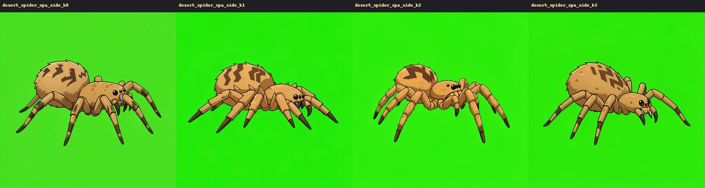
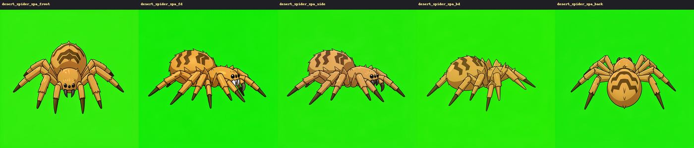
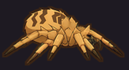
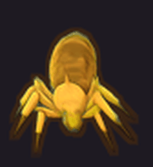
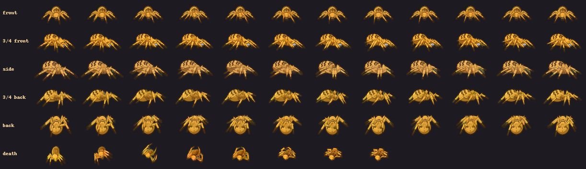
SP-B · Mild cartoon
A rust tarantula with a cream stripe, big shiny eyes and a grumpy frown.
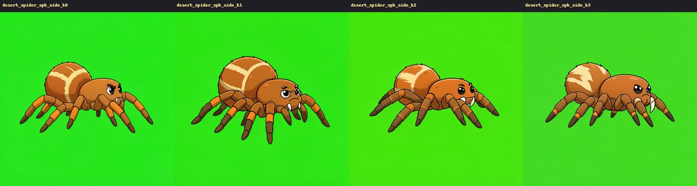
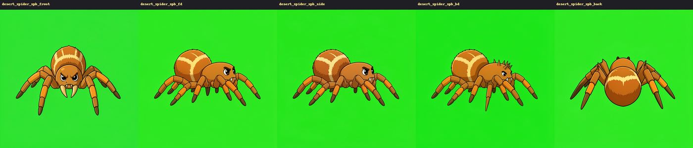
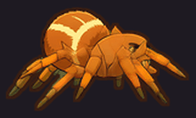
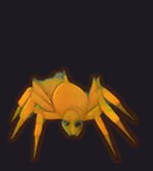
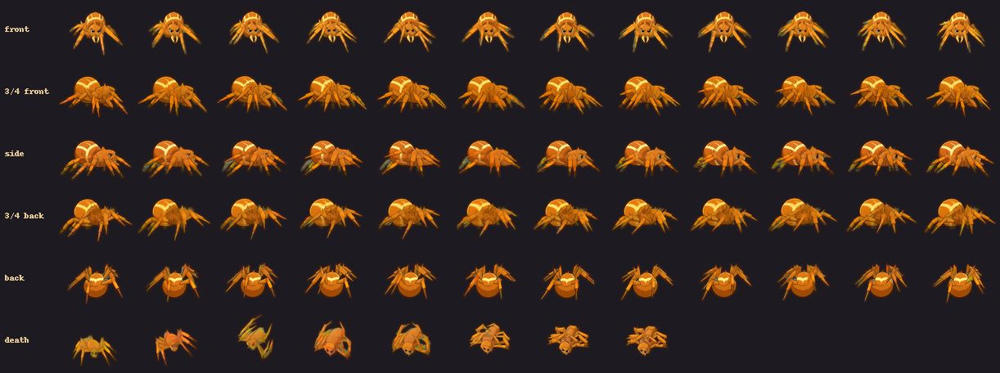
SP-C · Exaggerated
A balloon of an abdomen with a red mark, chunky legs, angry eyes under heavy brows.
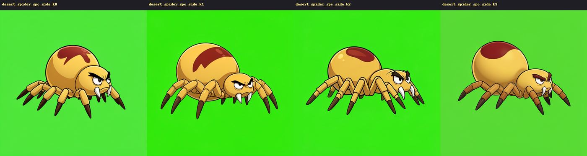
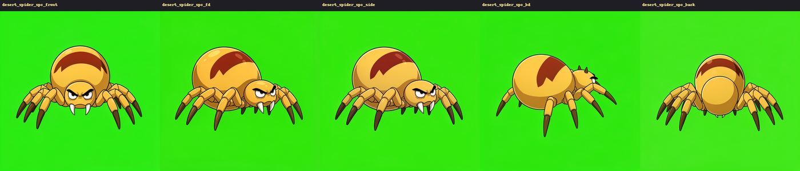
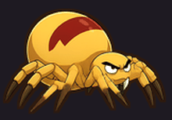
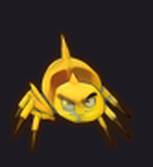
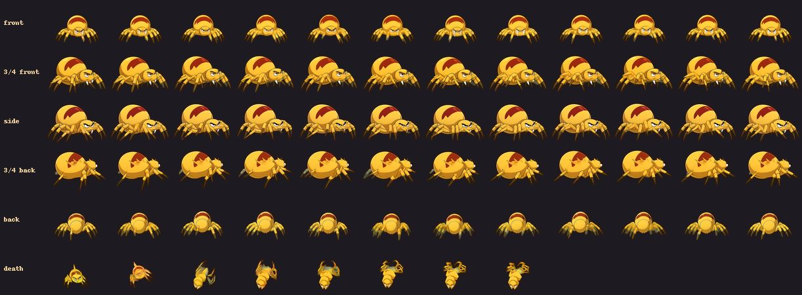
SP-D · Very exaggerated
A purple ball of anger: huge furious eyes, a snarl of fangs, little stick legs.
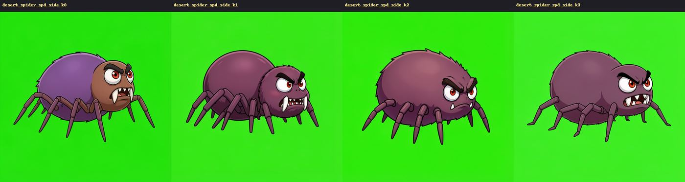
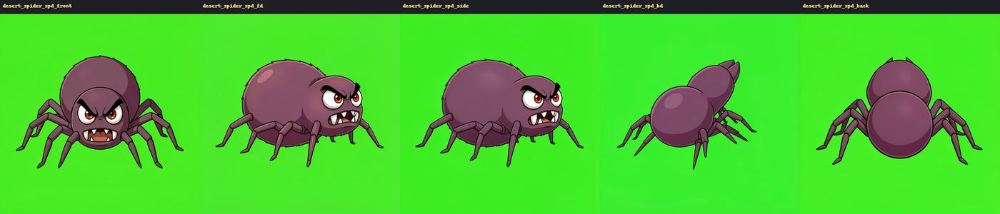
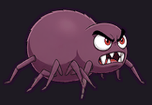
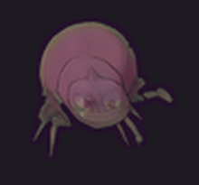
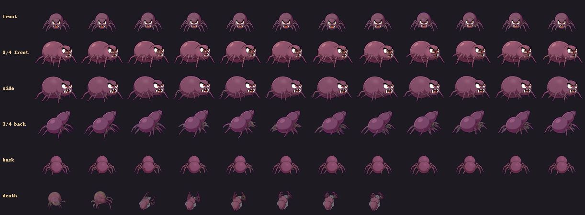
Prompts, negatives and the leg count
The look words, least to most cartoony
| Look | prompt | detail | Why |
|---|---|---|---|
| SP-A | a big hairy desert wolf spider with sandy tan and dusty brown bristly fur, a dark brown chevron pattern down the middle of its oval abdomen, long legs banded in tan and dark brown, a cluster of small glossy black eyes on the front of its head and two short dark fangs | a real spider's anatomy and proportions, no cartoon face, no eyebrows, no mouth, no teeth, menacing | A real desert species, real markings; "no cartoon face" because the house style pulls every creature towards a mascot. |
| SP-B | a chunky cartoon desert tarantula with a round fuzzy rust-orange abdomen with a cream stripe pattern, thick fuzzy brown legs with orange bands at the joints, two big shiny black eyes with white highlights and four tiny eyes above them, a small grumpy frown and two little curved fangs | a slightly oversized head, friendly-mean mobile game creature, still clearly a spider | One step: a face appears, the body stays a spider's. |
| SP-C | an exaggerated cartoon desert spider with a huge round bulbous abdomen like a balloon in sandy yellow with a dark red hourglass mark on top, short chunky legs with dark brown tips, a small head with two big angry glaring eyes under heavy slanted brows and two curved white fangs | exaggerated cartoon proportions: the abdomen three times the size of the head, thick short legs | The brief: a big round abdomen, chunky legs, angry eyes. The size ratio is said as a number. |
| SP-D | a very exaggerated goofy cartoon spider: an enormous round fuzzy purple-brown body, a big head with two huge furious bulging eyes with tiny red pupils and thick angry eyebrows, a snarling mouth with two big white fangs, and eight tiny thin stick legs far too small for its big body | extremely exaggerated cartoon proportions: the body huge and round, the eyes and fangs huge, the legs tiny and thin | Huge eyes, fangs, tiny legs against the body. Purple so it is not mistaken for C at a glance. |
The words every look shares
anatomy, sent in every painting and every walk:
Each part of it answers a way many-legged creatures go wrong: a number per side (painters count better per side than in total), "one single continuous limb" (legs that split or merge at a knee), "starts at the body" (a leg growing out of the head), "ends in one pointed foot" (double feet), the absent parts named (an insect's antennae and a scorpion's tail creep in), symmetry (five legs on one side, three on the other).
blockout (how the clay is described): a smooth plain clay 3D model of a spider: a small head with two short fangs at the front, one big oval abdomen behind it, and eight long jointed legs, four on each side, spread round the body. The painter is told to take only the anatomy, the pose, the camera angle and where every leg is from the clay.
words.front, after the first front walk grew ghost legs: walking straight towards the viewer, seen from the front and a little above: its head and two fangs are at the bottom middle of the picture, nearest the viewer; its two front legs reach forward towards the viewer, one on each side of the head, and its other six legs spread out to the left and the right, three on each side; the round abdomen rises behind the head.
motion: scuttling in place on its eight legs like a real spider, the legs stepping in two alternating sets of four, the body low and level.
Negative prompts: what they do here
The look keeps a negative list (anim_negative): extra legs, nine legs, ten legs, six legs, legs merging, a leg growing from the head, antennae, a tail, wings, two heads, a second spider, standing upright. In this pipeline it changes nothing, and neither did the scorpion's:
- Klein (the paintings) runs at cfg 1 with the negative side zeroed. At cfg 1 the sampler uses the positive prompt alone.
- Flux.2 dev (the better painter,
--dev) is guidance-distilled: it has no negative input at all. - Wan 2.2 Fun Control (the walks and the death) runs the 4-step speed-up at cfg 1, and ComfyUI then skips the negative pass entirely. The negative words are sent and never read.
To see whether a real negative would help, the SP-A side was painted again on Klein with the negative wired in, at cfg 2 and cfg 3 (the same seed, then another):

So the leg count is held by three things instead: the clay (it must have the right legs: the six-legged model would have taught every painting six), the anatomy words above, and your eye. The vision check cannot count legs; every candidate here was counted by hand, tip by tip, near side and far side. The walks follow the depth video's legs, so a painting with the right legs walks with the right legs, unless the painting and the depth disagree about where they are (the ghost legs below).
Mistakes and dead ends
The model had six legs
Nothing in the old probe said so; every painter copies the clay, so a six-legged clay would have made six-legged spiders in every look. Found by counting the bones, fixed with the leg copy (step 2). The probe counts leg chains now.
Facing the wrong way, resting in the wrong place
The probe guessed −Y for a spider facing +Y, and the file's rest pose sits far from its stance. The first leg copy turned legs round hips that were somewhere else and the legs crossed. Both fixed in the tools (the head bone gives a creature's forward; rest=frame:0).
The curl that folded back on itself
The first death recomputed each leg's fold axis at every joint. Once a leg passed straight down the axis flipped and the legs ended bunched out sideways instead of curled over the belly. One axis per leg, read from the standing pose, fixed it (picture in step 5).
Ghost legs in SP-A's front walk
The front painting fanned all eight legs out to the sides; the front depth video has the two front legs reaching towards the camera under the head. Wan 2.2 followed both and drew two extra grey-green legs where the depth had legs and the painting had none: ten legs. The front was painted again with words that put the front legs where the model has them, and walked again: eight.
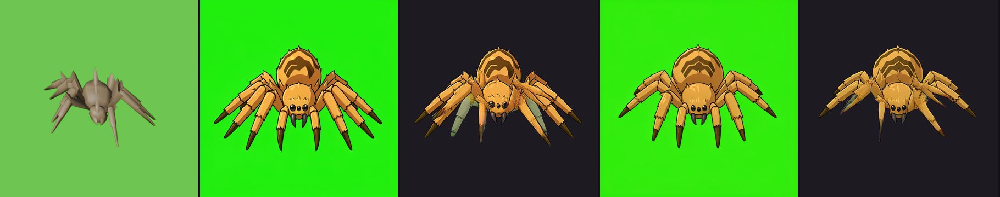
The cartoon face that vanished
SP-D's front painting is mostly face. Its walk came out faceless: a purple model seen from above with a slit for a mouth. Wan Fun Control follows the depth video's shapes over the painting's, and the model's head, seen from 25° above, is a low wedge showing its top. Tried in turn:
- The clay given the look's proportions (body 1.5, head 1.6, legs 0.65): still faceless.
- The head raised 35° so it faces the camera, and only the body's depth blurred (the legs kept sharp): still faceless, it read as the spider's back.
- The whole depth video blurred 14 px: the face stayed, but the legs stopped walking.
- The whole depth video blurred 10 px: the face stays and the legs walk. This is what SP-C and SP-D use for their front (SP-D for its three-quarter back too) and for their deaths:
ctl_soft,death_soft.
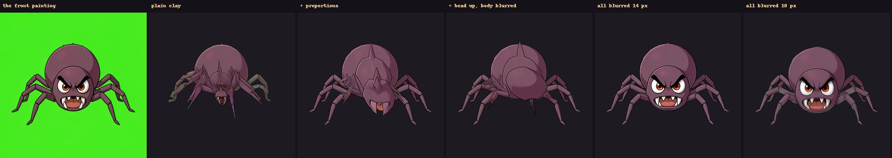
SP-C met the same in its first run (the front walk showed the top of its abdomen and two fangs, no face). Its second run, on the clay with its proportions and a softened front, kept the face in front, but its three-quarter back and back walks came out as the plain clay (a pale ochre lump with no markings), so the strip uses the second run's front, three-quarter front and death, the first run's side and three-quarter back, and a back painted again (three candidates, the one without the stray leg) and walked on softened depth. SP-D's back, walked on softened depth too, kept its look.
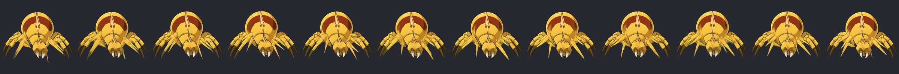
Green bellies in the death
The paintings never show a spider's underside, so the walk invents the belly the roll shows, and on a green screen it invents green: every death has pale green patches under the curled legs, which the strip's green guard turns grey. Naming each look's belly colour in the death words ("its dark purple-brown belly … nothing green") did not stop it. A softened death video was worse (the whole spider went to mush) and was dropped. The dead pose still reads: on its back, legs curled up. A cleaner belly would need a painted dead still as the death's last frame, or a blue screen for these looks.
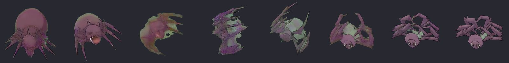
A ninth leg on SP-C's back view
SP-C's first back painting had a leg growing straight down from the end of the abdomen, between the two sets of four. The second run's back (on the clay with its proportions) walked as a plain lump, so the back was painted again as three candidates; the one picked has four legs a side and nothing in the middle.
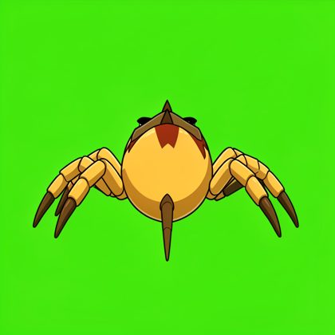
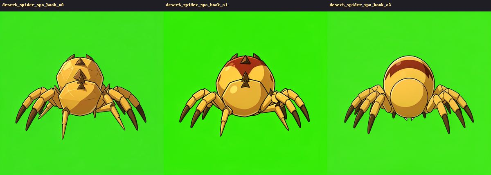
The middle of the roll smears
Frames 5 and 6 of every death (the spider on its side, legs flung) come out as a blur of legs: the video model cannot keep a figure together through a fast half-turn. death_keep skips them: [3, 4, 7, 8, 9, 11, 14, 24] keeps the stand, the start of the roll, the landing, the curl and the held dead pose. At the game's 12 frames a second the roll takes four frames, a third of a second.
Negative prompts: a dead end
As described above: they reach no model in this pipeline, and wiring a real one into Klein at cfg 2 or 3 did not hold the leg count.
A view painted again kept its old walk
The walk cache was found by name alone, so after SP-A's front was painted again its old ghost-legged walk would have come straight back. The cache now checks the painting, the seed and the control video, and picking a repainted view sets its old walk aside.
What worked first time
- The side candidates followed the clay's legs: each picked side painting has eight, four near and four far, counted tip by tip.
- The made walk and the made death drove Wan without trouble: the walks loop, the death ends on its back with its legs curled.
- SP-B walked cleanly on the plain clay in all five views.
The same in the Level Editor
Everything above was run from the command line so it could be watched and fixed on the way. This is the route you would take in the Level Editor for the same spider, with the fixes from this pass in place. The values are the ones used here.
1. Make the creature
Enemies tab → + New from template ▾ → the Fire Ant (the numbers this spider starts from) → id desert_spider, name Desert Spider. Set size 1.3, radius 0.5, pack 3, blood #7BC43A, frame_px 160, the doc line. Leave it off the timeline until its looks are approved. Save asset.
2. Read the model
In the spider's editor, + Depth driver… opens the driver form; its method cards hold everything 3D. Your file sits loose in tools/dl/uploads/3d/, which the editor now lists (it used to see only models in a folder of their own). Pick What a 3D file can do, src spider_low_poly (spider._low_poly.glb), Queue. Its probe line then reads: rigged model (other rig) with 1 clip · 6 leg chains (3 left, 3 right); no walk among the clips? driver_depth mode gait makes one, mode flip_curl a death on its back; a missing leg pair is copied by "A model's legs fixed" (ref_limbs) · forward +Y.
3. Give it eight legs
+ Fix a model's legs… (method A model's legs fixed, new):

spider_8legs, rest frame:0, clone and turn as in step 2 above, forward +Y. It writes tools/dl/uploads/3d/spider_8legs/spider_8legs.glb, a top view to check (top.png) and the new model's probe (8 leg chains, 4 a side).4. The walk and the death
+ Depth driver… → Depth drivers from a rigged model's own clip, or a made walk and death. Two jobs:

spider_8legs, name spider_walk, mode gait, legs leg_, forward +Y; no action.

spider_death, mode flip_curl, views front,fd,side (front alone is enough for the game), curl 55, curl_root 70.For a cartoon look, a third and fourth pair of jobs with the proportions: spider_walk_c / spider_death_c with body_scale 1.6, head_scale 1.5, leg_scale 0.85, head_pitch 30, and spider_walk_d / spider_death_d with 1.5, 1.6, 0.65, head_pitch 35 (why: mistakes, the face that vanished).
5. Each look
In the spider's editor, + Generate art… → method Creature: walked on a 3D model's own motion. The recipe fields, with SP-A's values:
| Field | Value |
|---|---|
| drivers | spider_walk (SP-C: spider_walk_c, SP-D: spider_walk_d) |
| prompt | the look's words (below) |
| noun | a spider |
| blockout | a smooth plain clay 3D model of a spider: a small head with two short fangs at the front, one big oval abdomen behind it, and eight long jointed legs, four on each side, spread round the body |
| detail | the finish words of the look |
| anatomy | exactly eight legs, four on each side, each leg one single continuous jointed limb … (in full below) |
| words | the four camera sentences (front, fd, bd, back) |
| motion | scuttling in place on its eight legs like a real spider, the legs stepping in two alternating sets of four, the body low and level |
| death_drivers | spider_death (or _c, _d) |
| death_motion | it jerks, rolls over onto its back and lies dead with its eight legs curled up over its <belly colour> … |
| death_keep | [3, 4, 7, 8, 9, 11, 14, 24]: the stand, the roll without its two smeared frames, the landing, the curl, the held dead pose |
| ctl_soft, death_soft | SP-C and SP-D only: {"radius": 10, "body": false, "views": ["front"]} (SP-D: front, bd, back): the cartoon faces survive the walk |
| directions, fps, screen | 8, 20, green |
| outline_frac, outline_color | 0.014, a dark of the look's colour |
| Candidates (job) | 4 |
Queue. The job paints four side candidates and waits on its card for your pick: count the legs of each (see the leg count), pick, and it paints the other four views and walks all five, then the death. Duplicate… the look for the next one and change only the prompt (and the drivers for C and D).
When a view comes out wrong (SP-A's front grew ghost legs), Re-roll… the look and fill the continuation fields: view_cands front,fd, Candidates 3; pick one per view on the card. Since this pass the walk of a view painted again is walked again by itself. To change which death frames are kept, edit death_keep and Re-roll: no new render, a few seconds.
6. Check, approve, place
Test in game (the spider's editor) plays it in the arena; approve the look you like (the others stay fresh), make it the default, and add a roster row on the Timeline when you want it in a stage.

Level Editor fixes made
| Problem met | Fix | Where |
|---|---|---|
| The probe never said the spider had six legs; the painters copied the clay | probe.json limbs (count, left, right); the probe line in the page says it and names the next step | blender_ref.py, jobs.js |
| The probe said −Y for a creature facing +Y (it only read humanoid feet) | A rig without feet: forward from the middle of its joints to its head bone (forward_basis: head) | blender_ref.py |
A model dropped into uploads/3d by hand (yours: the spider, the ant, the raptor) was never listed, and its probe would have gone to uploads/3d/probe.json, shared by every loose file | Loose models are listed under their own slug; their probe and renders go to uploads/3d/<slug>/; the pickers use the file's own path | server.py, jobs.py, jobs.js |
| A rigged model without a walk clip could not drive a walk | driver_depth modes gait and flip_curl, their settings in two folds that open with the mode; only changed settings reach the command line | blender_gait.py, blender_depth_drivers.py, jobs.py, methods.json, jobs.js |
| A cartoon look's walk lost its face on the plain model's depth | Proportion settings on the made motions (body_scale, head_scale, leg_scale, scale_bones, head_pitch), and the recipe keys ctl_soft / death_soft: the depth video softened before the walk | blender_gait.py, animate.py (soften_ctl), gen_ctl.py, methods.json |
| No way to fix a model's legs | New job kind and method ref_limbs (A model's legs fixed): the fixed model as a new upload, probed | blender_limb_clone.py, jobs.py, methods.json |
| The creature editor had no button for its 3D steps (only the Heroes tab opened a driver form) | + Depth driver… and + Fix a model's legs… under a creature's looks | assets.js |
A model field (src) of a driver job was a plain text box: you had to type the path | A methods.json file field keeps its upload picker | jobs.js |
| A view painted again kept its old walk: the walk cache was keyed on the name only, and walk_seeds needed its folder moved away by hand | A cached walk serves only the same painting (a hash of it), the same seed and the same control video (its folder and its frames on disk); picking a view painted again sets its old walk aside | animate.py (cache_fits), gen_ctl.py, methods.json |
| The help said negative words keep extra legs out of the walks; they change nothing at cfg 1 | anim_negative's help says so; creature_ctl's notes give the many-legs rules | methods.json |
Seen and left: a new creature without an icon makes the page ask for that icon a few hundred times (404s in the console, harmless; the register job's placeholder ends it), and a form opened on a chosen method does not scroll to its card. All checks: python tools/level_editor/selftest.py green, the new ones in selftest_SPIDER92.py.
New settings
Made walk (mode gait)
| Setting | Default | Spider | What it does |
|---|---|---|---|
legs | leg words | leg_ | Which bones are legs (a regex over their names) |
gait | alternate | alternate | Two sets half a stride apart (spider, insect tripod, trot); wave ripples each side from the back |
swing | 14° | 18° | How far each leg turns fore and aft |
lift | 18° | 24° | How high a leg rises while it steps |
flex | 14° | 16° | How much the knee bends while the leg is up |
duty | 0.55 | 0.55 | Share of the stride a leg is on the ground |
bob, sway | 0.04, 2.5° | same | The body's dip and side-to-side turn |
base | (rest pose) | — | Seconds into a clip whose pose is the stance |
Made death (mode flip_curl)
| Setting | Default | Spider | What it does |
|---|---|---|---|
roll_axis | side | side | Rolls over sideways (a spider) or end over end (front) |
roll, roll_dir | 180°, 1 | same | How far and which way it turns over (170°: tipped a little) |
roll_start, roll_time | 0.08 s, 0.4 s | same | When the roll starts and how long it takes |
curl_root | 40° | 70° | Each hip swings its leg towards the belly |
curl | 70° | 55° | Each knee folds in |
curl_start, curl_end | 0.05 s, 0.75 s | same | When the curl runs |
bounce | 0.12 | 0.12 | Bounce on landing (share of its height) |
twitch | 6° | 6° | The curled legs twitch before it lies still |
spasm, spasm_deg | 0.12 s, 22° | same | The hit: the legs fling up |
seconds, hold | 1.2 s, 0.85 | same | Clip length; after this share the dead pose is held |
Proportions (both modes)
| Setting | Default | SP-C | SP-D | What it does |
|---|---|---|---|---|
body_scale | 1 | 1.6 | 1.5 | The body bigger, the legs keeping their size |
head_scale | 1 | 1.5 | 1.6 | The head bigger (room for a cartoon face) |
leg_scale | 1 | 0.85 | 0.65 | Every leg longer or shorter |
scale_bones | — | — | — | name:factor,… any other bone |
head_pitch | 0° | 30° | 35° | The head raised so its face looks at the front camera |
Softened depth (creature_ctl recipe)
ctl_soft {"radius": 10, "body": false, "views": ["front"]}: the views named walk along their depth video blurred by radius pixels (written once beside the driver, spider_walk_d_soft10/); body: true blurs only the body and head and keeps the thin legs sharp (it did not keep the face here). death_soft the same for the death video. Without them nothing changes.
Leg fix (blender_limb_clone.py, method ref_limbs)
rest=frame:<n>, clone=chain:new:yaw[:shift];…, turn=chain:yaw[:shift];…, forward, shot. Yaw is counter-clockwise from above; shift is a share of the leg's reach along forward.
Timings
| Step | Where | Time |
|---|---|---|
| Probe the model | Blender, this PC | 4 s |
| Fix the legs (copy, turn, rest pose) | Blender | 10 s |
| Made walk: 5 views × 25 depth frames + clay + look | Blender | 10 s |
| Made death: 3 views × 25 frames | Blender | 8 s |
| Side candidates (4, Klein) | AI server | 25 s each, 2 min |
| Your pick | you | a minute: count the legs |
| The other four views (Klein) | AI server | 25 s each |
| Five walks (Wan 2.2 Fun Control, 25 frames) | AI server | 65 – 120 s each, about 7 min |
| The death (Wan, 25 frames, 8 kept) | AI server | 75 – 80 s |
| A view painted again (3 candidates) and walked again | AI server | about 3 min |
| Different death frames kept (death_keep) | this PC | seconds, no render |
| One look, start to strip | about 12 minutes of the server, plus the picks |
The whole pass ran its jobs one at a time through the ComfyUI lock, sharing the server with your own Level Editor queue. Two looks were run twice (SP-C, SP-D) and one view pair once more (SP-A front and three-quarter front).
In the game

tools/item_shots.gd creatures=desert_spider@SP-A,…), three of each walking at the hero: SP-A, SP-B (top), SP-C, SP-D (bottom).The spider plays SP-B (a creature with looks must play one); all four looks are marked fresh until you approve one. It is on no map: its numbers are the Fire Ant's for now (36 HP, speed 3, bite 8, packs of three). Place it from the Timeline when a look is approved.